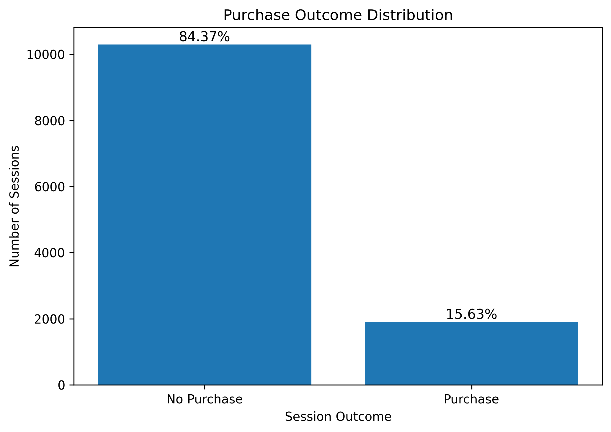
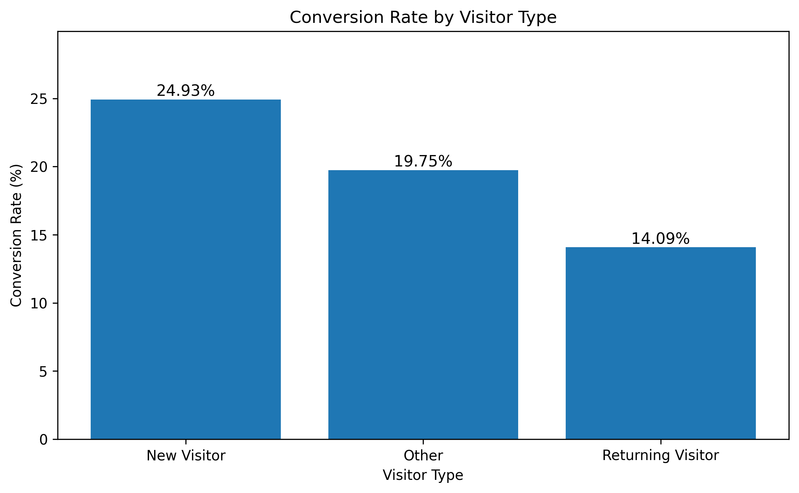
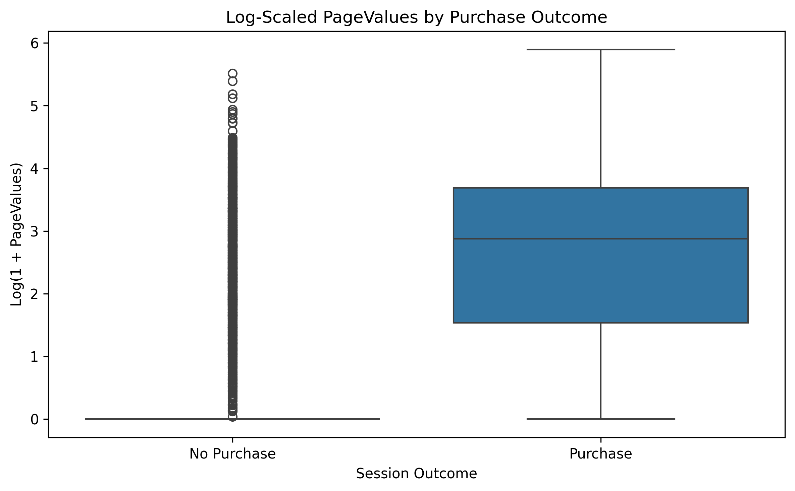
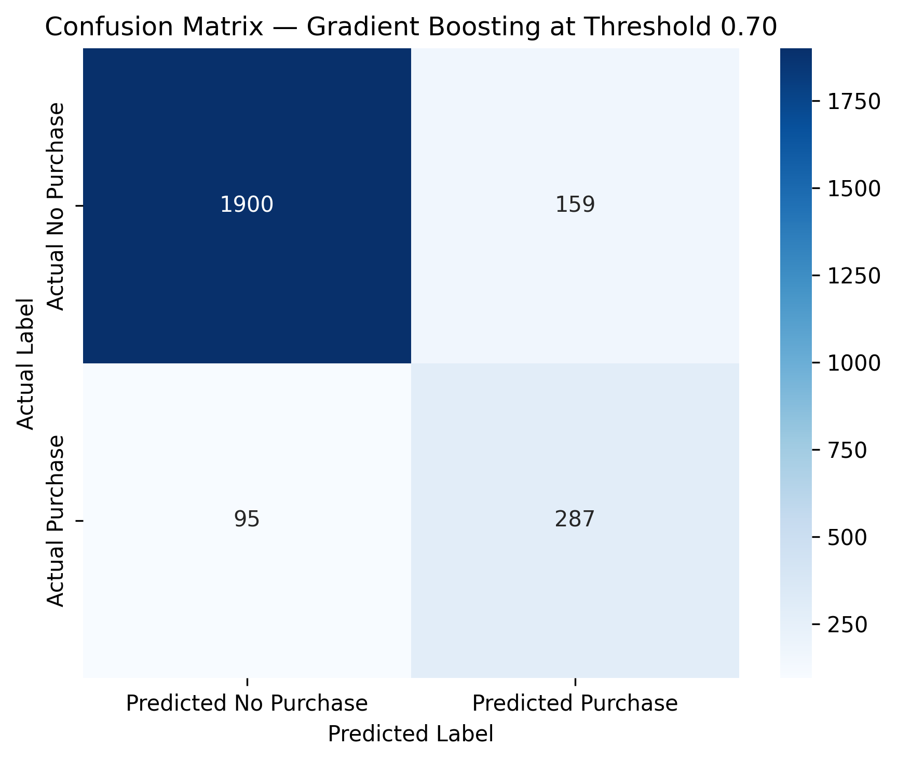
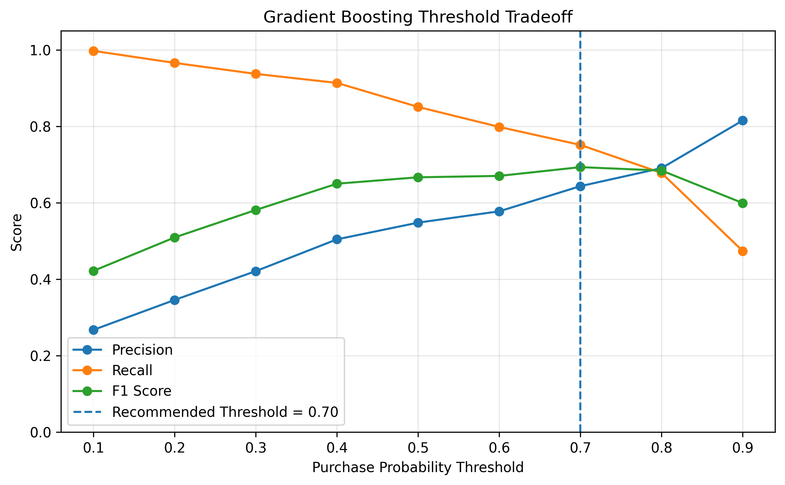
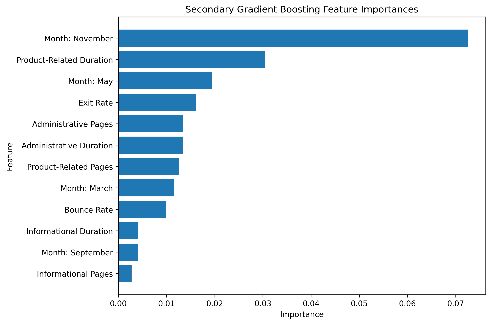

Business Analytics • Conversion Modeling
Customer Purchase Prediction & Conversion Analytics
Predicting purchase likelihood from browsing behavior, visitor context, model evaluation, and threshold-tuned conversion targeting.
This project builds a purchase-propensity workflow for online shopping sessions. It combines exploratory conversion analysis, supervised classification, threshold optimization, and feature-importance interpretation to support business-focused targeting decisions.
Project Overview
This project analyzes online shopping sessions to predict whether a visitor is likely to complete a purchase. The workflow goes beyond basic classification by connecting model performance to conversion rate, targeting tradeoffs, threshold selection, and interpretable behavioral signals.
Conversion Behavior
The dataset is highly business-oriented: most sessions do not convert, so the model must identify purchase-likely sessions from a much larger pool of non-purchase visits. This makes class distribution, visitor type, and behavioral value signals important before modeling begins.



Modeling Workflow
The notebook compares multiple supervised classification models and evaluates them using business-relevant metrics. The workflow uses train-test splitting, preprocessing, model comparison, threshold tuning, and final model interpretation.
Logistic Regression Baseline
Established an interpretable linear baseline for purchase prediction and comparison against more flexible models.
Tree-Based Models
Compared Random Forest and Gradient Boosting to capture nonlinear patterns in visitor behavior and session-level signals.
Threshold Tuning
Evaluated different probability cutoffs to choose a threshold that better supports conversion targeting decisions.
Model Performance
Gradient Boosting was selected as the final model because it delivered strong ranking performance and supported threshold-based targeting. At the selected threshold of 0.70, the model identifies a substantial share of purchase sessions while limiting unnecessary targeting of non-purchase sessions.
| Final model | Accuracy | Precision | Recall | F1-score | ROC-AUC |
|---|---|---|---|---|---|
| Gradient Boosting at threshold 0.70 | 89.59% | 64.35% | 75.13% | 0.6932 | 0.9377 |

Business Interpretation
The selected threshold favors identifying more likely buyers while still controlling false positives. In a business setting, this type of model could support campaign targeting, remarketing prioritization, or conversion-likelihood scoring rather than replacing human strategy.
Threshold Optimization
Instead of relying on the default 0.50 classification threshold, the project evaluates multiple probability cutoffs. This is important because conversion modeling is usually a business tradeoff: a lower threshold captures more buyers but may target more non-buyers, while a higher threshold improves confidence but may miss opportunities.

Interpretation
The threshold analysis turns the model from a generic classifier into a decision tool. A threshold of 0.70 provides a practical balance between finding purchase-likely sessions and avoiding excessive false-positive targeting.
Feature Signals and Interpretation
The model interpretation step identifies the behavioral signals that contribute to purchase-likelihood scoring. Because PageValues is very dominant, the secondary feature importance view helps surface additional predictors beyond the strongest single signal.

Role and Implementation
I implemented the full conversion analytics workflow, including data cleaning, exploratory analysis, model comparison, threshold tuning, final model evaluation, and feature-importance interpretation.
Conversion Analysis
Analyzed purchase imbalance, visitor behavior, and feature distributions to understand the business problem before modeling.
Predictive Modeling
Compared Logistic Regression, Random Forest, and Gradient Boosting models for purchase outcome classification.
Threshold and Evaluation
Tuned the final decision threshold and interpreted performance using precision, recall, F1-score, ROC-AUC, and confusion matrices.
Tools
Python • Pandas • NumPy • Matplotlib • Scikit-learn • XGBoost • Jupyter Notebook
Artifacts
The project artifacts include the notebook, source repository, conversion analysis visuals, model evaluation outputs, and interpretation graphics.
GitHub Repository
Source repository containing the notebook, code, visual outputs, and documentation.
Open repository →Notebook
Main Jupyter Notebook covering conversion analysis, model comparison, threshold tuning, and feature interpretation.
customer_purchase_prediction_conversion_analytics.ipynbVisual Outputs
Selected visuals for conversion behavior, feature signal, threshold optimization, final model performance, and secondary feature importance.
images/projects/customer-purchase/